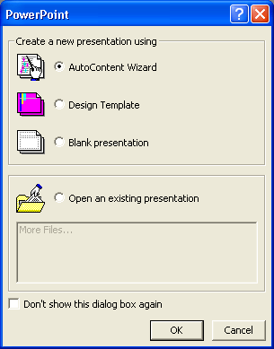
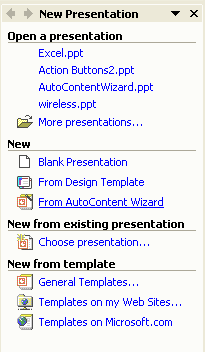
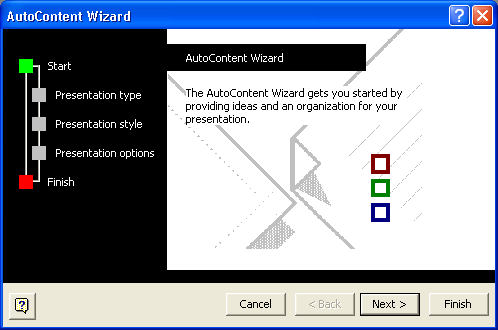
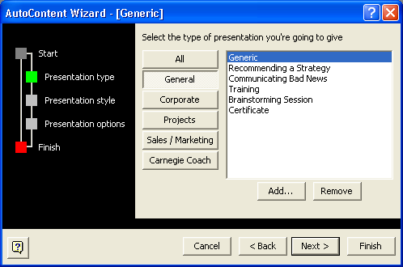
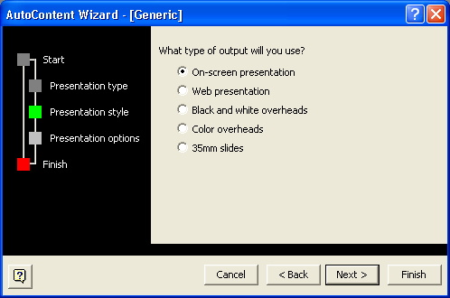
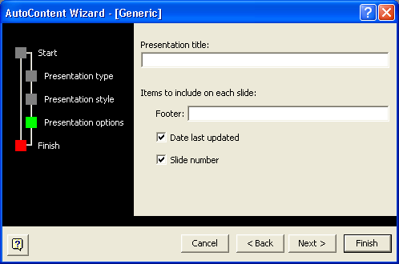
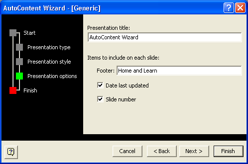
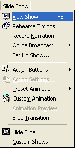
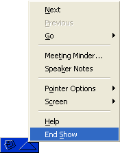

Free
powerpoint
Tutorials
|
Free
powerpoint
Tutorials
|
|
 home home |
Stay at Home and Learn | ||||
Getting Started with PowerPoint |
|||||
|
The AutoContent Wizard
For the first section of this PowerPoint course, we'll take you through the steps needed to generate a quick presentation. We'll use the AutoContent Wizard. When the wizard finishes putting together a basic presentation, we'll then take a look at the various areas of PowerPoint, so that you can familiarize yourself with the software. Off we go then!
 If you have PowerPoint 2003, you won't see this box. Instead, look for the Task Pane on the right hand side. Here it is:  Select From AutoContent Wizard. You'll then see the wizard appear.
 But notice the green square on the left of Start. This shows you where in the Wizard you are. As you can see, there are three more steps to go before the finish. Click the Next button:  The Presentation Type screen allows you to select the sort of presentation you're going to give. Click the buttons to see more options appear. For this first slide show, click on General, and then select the Generic option. Click Next to go to the Presentation Style step:  Select On-Screen presentation, if it's not already selected. Then click Next to see the Presentation Options:  There are not many Presentation Options to set, but type the following in the Presentation title box: "AutoContent Wizard" You can include a footer on every slide. This can be your company's
name, your name, or anything that you want to appear on the very bottom
of each slide of your presentation. In our footer, we've typed Home
and Learn. Leave the two options ticked (Date last updated and Slide
number).  Click Next and you're finished with the Wizard: Click the Finish button and PowerPoint will create your presentation. The slide show that the Wizard creates is merely an outline. You'll see a background image, and some place holders for things like text and images. The different PowerPoint areas can take some getting used to. Before we see what the various areas do, have a look at your presentation by clicking Slide Show from the menu bar at the top. From the Slide Show menu, select View Slide Show (Or just press the F5 key on your keyboard.):  A slide in your presentation should fill the entire screen. To move on to the next slide, click once with your left mouse button. There are nine slides in the presentation that the Wizard produces. If you want to quit, press the escape key on your keyboard (The Esc key in the top left). With one of the slides fully on your screen, though, notice the arrow buttons in the bottom left. Left click a button and you'll see a menu appear:  The menu allows you to navigate through the slide show, or to end the show. You can see the same menu by right clicking anywhere on the screen. Quit the slide show to return to PowerPoint, and we'll take as look at the various areas of the software.
First, though, save your work by clicking File from the menu bar, and then Save. When you're saving your work, note that a PowerPoint file ends in the letters ppt. If you see this file extension then you know it's a PowerPoint presentation.
|
||||